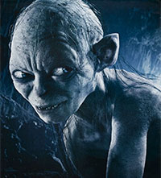

Todo comenzó con la forja de los Grandes Anillos.
Tres fueron entregados a los Elfos inmortales, los más sabios y bellos de todos los seres.
Siete a los señores Enanos. Grandes mineros y artesanos de las cavidades montañosas.
Y Nueve... Nueve fueron entregados a la raza de los hombres... Que ansían por encima de todo el Poder.
En aquellos anillos residía el poder y la voluntad para gobernar a cada raza. Pero todos ellos fueron engañados... Pues otro Anillo más fue forjado... En la tierra de Mordor, en los fuegos del Monte del destino, el Señor Oscuro Sauron forjó en secreto el Anillo Regente para controlar a todos los demás. En ese Anillo descargó toda su crueldad, su malicia y su voluntad de dominar todo tipo de vida...
Un Anillo para gobernarlos a todos. Uno a uno, los pueblos libres de la Tierra Media fueron sometidos por el poder del Anillo.
Pero hubo algunos que resistieron. Una Última Alianza de Hombres y Elfos lucharon contra el ejército de Mordor. Y en las lomas del Monte del Destino libraron su batalla por la libertad de la Tierra Media. La victoria estaba próxima... Pero nada puede acabar con el Poder del Anillo... Y fué en aquel preciso momento, desvanecida ya toda esperanza, cuando Isildur, Hijo del Rey recurrió a la espada de su padre...
Sauron, el enemigo de los pueblos libres de la Tierra Media fue derrotado.
El Anillo llegó a manos de Isildur, que tuvo la oportunidad de destruir su mal para siempre. Pero el corazón de los hombres se corrompe con facilidad, y el Anillo de Poder goza de voluntad propia. Traicionó a Isildur hasta llevarle a la muerte.
Y aquellos hechos que nunca debieron caer en el olvido, se perdieron en el tiempo. La Historia se convirtió en Leyenda. La Leyenda se convirtió en Mito, y durante 2.500 años el Anillo pasó desapercibido. Hasta que cuando se presentó la ocasión encontró a un nuevo dueño... ¡Mi Tessoro! El Anillo acabó en manos de la criatura Gollum que lo ocultó en las profundidades de las Montañas Nubladas. Y allí, le consumió.
Gollum: ¡Él vino a mi! ¡Todo mío! ¡Mi vida! ¡Todo mío! ¡Mi tessoro!
Galadriel: El Anillo proporcionó a Gollum longevidad antinatural. Durante 500 años envenenó su mente; y en la lúgubre caverna de Gollum esperó. La oscuridad negó los bosques del mundo. Llegó el rumor de que una sombra crecía en el Este. El murmullo de un temor sin nombre. El Anillo de Poder lo percibió. Su hora había llegado. Abandonó a Gollum, pero algo ocurrió al margen de la voluntad del anillo... fue recogido por la criatura que menos cabía imaginar... Por un Hobbit, Bilbo Bolsón, de la Comarca.
Gollum: ¡¡Perdido!! ¡MI TESSOORO! ¡PERDIDO!
Galadriel: Pero pronto llegaría el momento en que lo Hobbits tendrían en sus manos el futuro de todos...